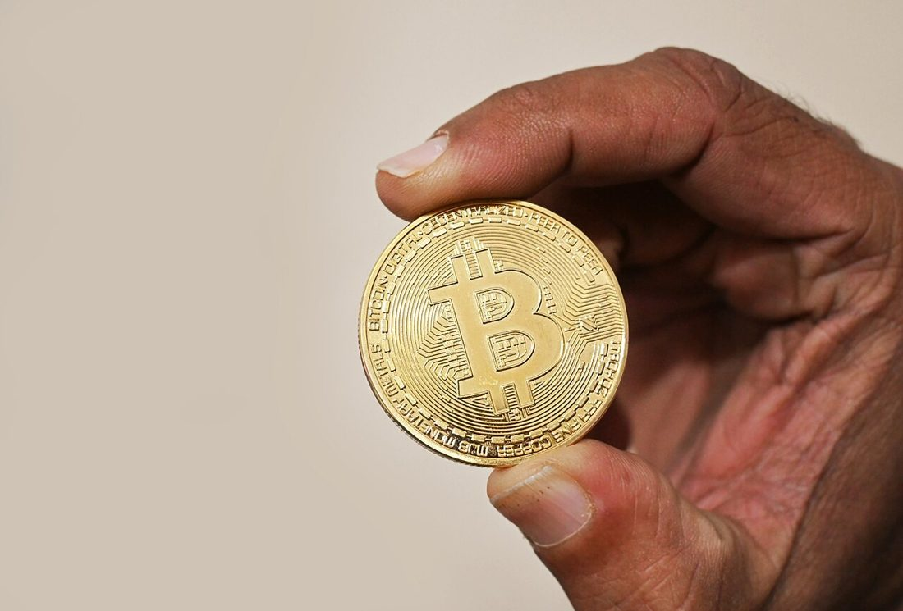

當戰爭或惡性通膨把一國貨幣打回「壁紙」，銀行凍結、物價一天三變，人民要怎麼保住手上的購買力、怎麼繼續交易？海外多個危機經濟體給出了一個共同的答案之一：轉向加密貨幣，尤其是與美元掛鉤的「穩定幣」。這篇說明它為什麼會發生、怎麼運作、有哪些真實案例，以及——同樣重要——它有哪些不能忽視的重大風險。
本文是資訊性整理，不是投資、理財或法律建議，也不是鼓勵你買賣加密貨幣。加密貨幣高風險、各國法律地位不同，在某些地區使用或兌換可能違法。任何決定請自行評估、遵循當地現行法規，並以官方公告為準。

戰後重建或惡性通膨時期，本國貨幣常出現幾種狀況：快速貶值（存款購買力天天縮水）、銀行凍結或限制提領、跨境匯款管道被切斷。這時人民需要的，是一種：
加密貨幣在網路可用的前提下，恰好部分滿足這些需求——這也是它在多個危機地區被使用的原因。它可以視為〈現金與金融中斷因應〉的一種延伸選項：現金是「系統斷線時的最後手段」，而加密貨幣則是「本國貨幣本身失效時」的一種替代。但兩者都不是萬靈丹。
很多人以為危機中大家用的是比特幣，其實在日常交易與保值上，被用得最多的往往是穩定幣（stablecoin）。差別在於：
| 類型 | 價值 | 適合 | 問題 |
|---|---|---|---|
| 比特幣等波動型 | 大起大落 | 長期投機、避開資本管制的轉移 | 波動太大，不適合當日常支付與短期儲值 |
| 美元穩定幣（USDT/USDC） | 約與美元 1:1 | 當「數位美元」保值、支付、匯款 | 仍可能脫鉤、發行方風險、監管風險 |
換句話說，危機中人們真正想要的其實是「拿得到、帶得走的美元」，而穩定幣提供了一個數位化、可跨境的近似品。這就是為什麼在貨幣重貶的地區，穩定幣的使用往往比比特幣更貼近「支付」的場景。
以下是各界觀察到的現象（程度、合法性與官方立場各國不同，僅供理解趨勢）：
這些案例的共同背景是：當傳統金融系統失能或不可信，人們會尋找替代管道。但要強調，這些是「觀察到的行為」，不代表它安全、划算或適合每個人。
加密貨幣可以「自己保管」（不靠銀行），這是它在危機中的優點——沒有人能凍結你的錢包。但反過來，沒有人能幫你救回：忘記私鑰、被詐騙轉走、裝置損毀又沒備份，錢就沒了，沒有客服、沒有掛失。這與〈現金與金融中斷因應〉裡「分散、備份」的原則一樣重要。
這一節請認真讀。加密貨幣在危機中是「應急工具」，不是「安全資產」：
把它想成財務韌性的「其中一層」，而不是全部：
| 層次 | 工具 | 角色 |
|---|---|---|
| 系統斷線的最後手段 | 實體現金（小面額） | 斷網斷電也能用 |
| 日常與數位周轉 | 銀行帳戶、行動支付 | 平時便利，危機時脆弱 |
| 本國貨幣失效時的替代 | 外幣、（部分地區）加密穩定幣 | 保值與跨境，但有重大風險 |
核心原則和〈現金與金融中斷因應〉一致：分散、別把雞蛋放同一籃，而且實體現金永遠是斷網時的底線——加密貨幣再方便，斷網就動不了。
因為需要一種不受單一銀行系統控制、能跨境、相對保值的工具；本國貨幣重貶、銀行凍結時，穩定幣成為部分人的替代。但風險很高，非萬靈丹。
比特幣波動太大不適合日常支付；與美元掛鉤的穩定幣更接近「數位美元」，保值與交易上更常被使用。
委內瑞拉、阿根廷、黎巴嫩、土耳其、辛巴威等惡性通膨經濟體使用增加；烏克蘭戰時大量透過加密貨幣接收捐款與跨境轉移。
波動與脫鉤、詐騙、平台倒閉、私鑰遺失、依賴網路、法律風險。斷網就無法交易，所以無法取代實體現金。
台灣將虛擬資產視為高風險商品並納入洗錢防制監管，合規平台買賣非禁止但風險高。務必遵循現行法規與稅務，以官方公告為準。
※ 本文為一般資訊整理，非投資、理財或法律建議，亦不鼓勵買賣加密貨幣。加密貨幣高風險、各國法律地位不同，請自行評估、遵循當地現行法規與稅務，並以中央銀行、金管會等官方公告為準。